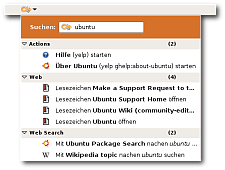

Beagle
Archivierte Anleitung
Dieser Artikel wurde archiviert, da er - oder Teile daraus - nur noch unter einer älteren Ubuntu-Version nutzbar ist. Diese Anleitung wird vom Wiki-Team weder auf Richtigkeit überprüft noch anderweitig gepflegt. Zusätzlich wurde der Artikel für weitere Änderungen gesperrt.
Anmerkung: Beagle wird nicht mehr weiterentwickelt, die letzte Version 0.3.9 ist vom 26. Januar 2009. Daher ist das Programm nur noch bis Ubuntu 10.04 in den offiziellen Paketquellen enthalten.
Zum Verständnis dieses Artikels sind folgende Seiten hilfreich:
Beagle bietet eine Suchfunktion, die den Inhalt von Dateien, Mails, Chats, besuchten Webseiten u.a. einbeziehen kann. Beagle erstellt den Suchindex ständig im Hintergrund und wird vom System unmittelbar über Änderungen informiert, so dass die Suche jederzeit aktuelle Ergebnisse liefert. Die Suche selbst kann über verschiedene Programme erfolgen.
Unter Ubuntu 8.04 war Tracker als Desktopsuchmaschine vorinstalliert. Man sollte nicht unbedingt zwei solcher Suchmaschinen installieren, da die Indizierung der Daten Rechenleistung beansprucht und speziell bei Laptops die Laufzeit des Akkus negativ beeinflussen kann. Man sollte daher vor der Installation von Beagle eine evtl. vorhandene Desktopsuchmaschine entfernen.
Installation¶
Die folgenden Pakete müssen installiert [1] werden:
beagle (universe [2])
beagle-backend-evolution (universe, Daten aus Evolution durchsuchen)
mozilla-beagle (universe, durchsucht Bookmarks und Historie von Firefox)
thunderbird-beagle (universe, indiziert Mails aus Thunderbird)
 mit apturl
mit apturl
Paketliste zum Kopieren:
sudo apt-get install beagle beagle-backend-evolution mozilla-beagle thunderbird-beagle
sudo aptitude install beagle beagle-backend-evolution mozilla-beagle thunderbird-beagle
Bevor Beagle verwendet werden kann, muss es ein erstes Mal den vollständigen Suchindex aufbauen. Dies ist ein sehr langwieriger Prozess, der mehrere Stunden oder sogar Tage dauern kann. Die Indizierung verläuft im Hintergrund, das Arbeiten am Rechner sollte dabei nicht beeinträchtigt werden. Allerdings belastet die Indizierung die CPU und Festplatte stark, so dass z.B. Laptops merkbar ins "Schwitzen" kommen.
Beagle ist in GNOME sehr gut integriert. Unter
"System -> Einstellungen -> Suche und Indizierung"
kann eingestellt werden, welche Verzeichnisse von der Suche abgedeckt werden sollen. Auch der automatische Start des Beagle-Hintergrunddienstes zur Indexerstellung kann hier ein- und ausgeschaltet werden. Außerdem ist ein Tastenkürzel für das mitgelieferte Suchprogramm (s.u.) konfigurierbar.
Anwendungen¶
GNOME¶
Desktop-Suche¶
Beagle enthält ein Suchprogramm, das sehr einfach zu bedienen ist. Es ermöglicht eine Einschränkung der Suche auf verschiedene Ergebnistypen wie Dokumente, Medien, Nachrichten oder Termine. Die Ergebnisse enthalten eine Vorschau und können nach Name, Änderungsdatum oder Relevanz sortiert werden. Die Desktop-Suche findet man unter
"Anwendungen -> Zubehör -> Suchen"
Das Programm muss nicht extra installiert werden. Es ist direkt in GNOME enthalten.
Nautilus¶
Wenn Beagle installiert ist, greift die Suchfunktion des GNOME-Dateimanagers Nautilus auf dessen Funktionen zu. Mehr dazu im Artikel über Nautilus.
Deskbar¶

Die Deskbar ist ein Applet für das GNOME 2-Panel, das u.a. auch die Suchfunktion über Beagle beinhalten kann. Darüber hinaus gibt es z.B. (Live-)Suche im Internet, den Lesezeichen, der Internetchronik und Wörterbüchern. Das Applet ist von Haus aus installiert. Es muss nur noch nachträglich zum Panel GNOME Panel werden.
Damit die Deskbar Beagle auch verwenden kann, installiert man das Paket python-beagle. Anschließend muss man dem Deskbar-Applet noch über mit einem Rechtsklick auf das Applet und unter "Einstellungen -> Suchen" mitteilen, dass es auch Beagle durchsuchen soll. Hier muss der Eintrag "Beagle" aktiviert werden.
KDE¶
Kerry¶
Kerry  ist die Oberfläche für die Beagle-Suche der KDE-Desktopumgebung. Das Programm wird nicht automatisch mit der Installation von Kubuntu mitinstalliert. Es ist allerdings in den Paketquellen enthalten und kann über das Paket
ist die Oberfläche für die Beagle-Suche der KDE-Desktopumgebung. Das Programm wird nicht automatisch mit der Installation von Kubuntu mitinstalliert. Es ist allerdings in den Paketquellen enthalten und kann über das Paket
kerry (universe [2])
mit apturl
Paketliste zum Kopieren:
sudo apt-get install kerry
sudo aptitude install kerry
installiert werden. Anschließend kann man es über
"K-Menü -> Dienstprogramme -> Kerry Beagle (Desktop-Suche)"
starten. Über die Suchzeile im Kopf des Programms kann nach einem Begriff gesucht werden. Die Ergebnisse wiederum können über die Filter und Suchparameter auf der rechten Seite weiter eingeschränkt werden.
Des Weiteren kann Kerry den Beagle-Dienst über die Schaltfläche "Einrichten" konfigurieren. Hier kann definiert werden wo Beagle suchen soll, was er indizieren soll und es kann kontrolliert werden was Beagle gerade macht.
Xfce¶
Webserver¶
Mit dem Beagle-Webserver ist es möglich eine Suchseite à la google-desktopsuche einzurichten. Mithilfe dieser lässt sich auf einfach Art zum Beispiel ein zentraler Samba-Server indizieren, so das alle Benutzer des Netzwerkes nach Dateien auf diesem suchen können.
Den Webserver einrichten¶
Damit der beagle-Daemon beim Start des Servers startet, benötigt er einen eigenen Benutzer und eine eigene Gruppe.
sudo addgroup beagle sudo adduser beagle --ingroup beagle
Hinweis: damit der Benutzer beagle sich im System nicht einloggen kann vergibt man kein Passwort.
Nun loggen man sich , mit Hilfe von su, in das System mit dem Benutzer beagle ein, um die Konfiguration zu ändern:
sudo su beagle
Jetzt muss man noch das Webinterface anschalten
beagle-config Networking WebInterface true
Damit alle Personen im Netzwerk Zugriff auf das Webinterface haben und nicht, wie in der Standardeinstellung, nur localhost, ist folgender Befehl nötig:
beagle-config Networking ServiceEnabled true
Beagle indexiert nur das Home-Verzeichnis von dem Benutzer welcher es gestartet hat, also hier /home/beagle/. Um andere Verzeichnisse zu indizieren, wiederholt man folgenden Befehl für jedes Verzeichnis. Unterverzeichnisse indiziert beagle von selbst.
beagle-config FilesQueryable Roots /weg/zum/verzeichniss
Nun loggt man sich wieder aus, um auf einen sudo-user zugreifen zu können.
exit
Damit beagle bei jedem Serverstart auch startet, muss man ihn die /etc/crontab eintragen[4], und am Ende Folgendes hinzufügen
@reboot beagle beagled
Nachdem man den Server neugestartet hat sollte unter SERVER_IP:4000 die Websuche erscheinen.
Problemlösungen¶
Beagle und Laptops¶
Das Indizieren des gesamten Datenbestandes ist ein sehr rechenintensiver Prozess. Sowohl die Festplatte als auch die CPU im Rechner müssen hier viel arbeiten, bis wirklich alle Daten indiziert sind. Arbeitet man mit einem Laptop, so merkt man sehr schnell an der Temperatur und den Lüftergeräuschen, dass Beagle gerade aktiv ist.
Dies geht natürlich zu Lasten der Akkulaufzeit falls man den Laptop gerade über den Akku betreibt. Damit die Akkulaufzeit nicht unter Beagle leidet gibt es die Option "Index data while on battery power" in den Einstellungen von Beagle bzw. in den Einstellungen von Kerry in Kubuntu "Daten bei Stromversorgung über Akku indizieren". Ist diese aktiv (bzw. inaktiv), so indiziert Beagle keine Daten, wenn der Laptop gerade nicht am Stromnetz hängt.
Beagle indiziert anscheinend nichts¶
Wenn die Indizierung (Befehle oben) nicht fortschreitet, sollte man die "Extended Attributes" aktivieren. Alle Dateien und Ordner können so zusätzliche Attribute enthalten (z.B. Text), die die Datei beschreiben, so ähnlich wie beim ID3-Tag (mp3). Beagle nutzt diese Technik, um sich zu merken, welche Datei er schon indiziert hat. "Extended Attributes" werden von folgenden Linux Dateisystemen unterstützt: ext2, ext3, XFS, ReiserFS.
Um das Ganze zu aktivieren, einfach die Option user_xattr in der /etc/fstab zu den Partitionen hinzufügen, die man indizieren will. Dazu ist ein Editor mit Root-Rechten [4] notwendig. Eine Zeile könnte nach der Änderung in etwa so aussehen:
/dev/sda3 /home reiserfs defaults,user_xattr 0 2
Danach müssen die Partitionen neu eingebunden werden [3]:
sudo mount -a
Schneller indizieren¶
Mit den folgenden Befehlen im Terminal [3] indiziert Beagle so schnell wie möglich (beendet Beagle, ändert die entsprechende Umgebungsvariable, startet Beagle neu). Dieses gilt aber nur bis zum Neustart des Rechners!
beagle-shutdown export BEAGLE_EXERCISE_THE_DOG=1 beagled
Den aktuellen Status kann man sich mit
beagle-index-info beagle-status
anzeigen lassen.

- Erstellt mit Inyoka
-
 2004 – 2017 ubuntuusers.de • Einige Rechte vorbehalten
2004 – 2017 ubuntuusers.de • Einige Rechte vorbehalten
Lizenz • Kontakt • Datenschutz • Impressum • Serverstatus -
Serverhousing gespendet von